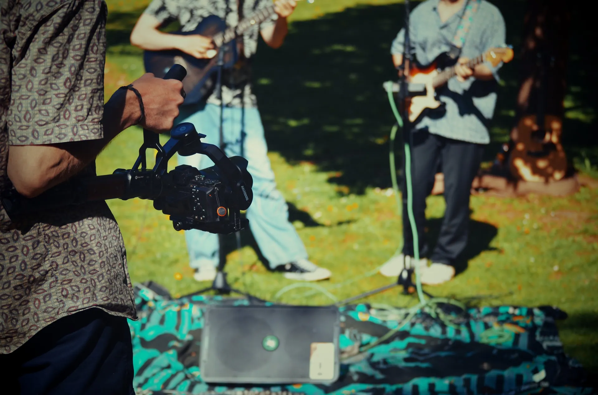
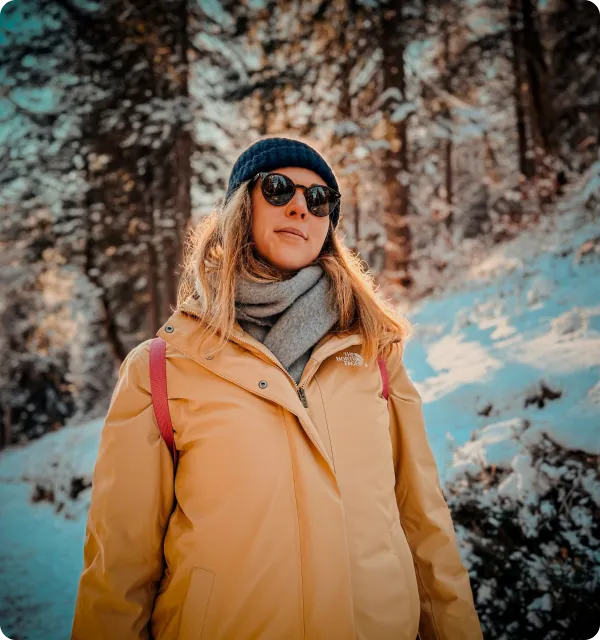
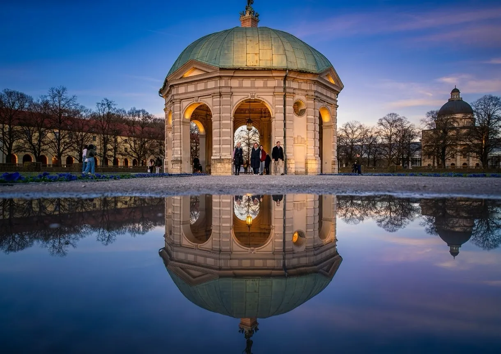

Leistungen
Visionen werden WirklichkeitFoto, Video & Webdesign in München
Foto, Film und Web – abgestimmt auf Ihr Ziel.
Mehr als Foto & Video: Ihre komplette Online-Präsenz aus einer Hand
Wir begleiten Ihr Unternehmen von der professionellen Foto- und Videoproduktion bis zur fertigen Website. So erhalten Sie ein perfekt abgestimmtes Gesamtpaket, das Ihre Marke überzeugend präsentiert – ohne zusätzlichen Koordinationsaufwand.
Professionelle Foto- & Videoproduktion
Modernes Webdesign & Entwicklung
Alles aus einer Hand – von der Idee bis zum fertigen Auftritt

Vom Konzept zur fertigen Produktion
Unser Prozess ist durchdacht und transparent. Wir begleiten Sie in jedem Schritt, damit Ihr Projekt genau Ihren Vorstellungen entspricht.

Warum wir?
Das unterscheidet uns
Wir arbeiten nicht nach Schema. Jedes Projekt ist einzigartig, jede Geschichte verdient volle Aufmerksamkeit und handwerkliche Sorgfalt.
Kreativität trifft Strategie
Wir denken nicht nur in Bildern, sondern in Zielen. Ihre Vision wird mit strategischem Denken umgesetzt.
Qualität auf allen Ebenen
Von der Foto- und Videoproduktion bis zur eigenen Website – alles aus einer Hand.
Ihre Geschichte im Fokus
Wir hören zu, verstehen Ihre Anforderungen und setzen sie um. Keine Kompromisse bei der Umsetzung.
Persönliche Betreuung
Sie arbeiten direkt mit uns zusammen, nicht mit einer Agentur. Ihre Fragen werden beantwortet, Ihre Wünsche berücksichtigt.
Schwerpunkte
Unsere Leistungen im Detail
Eventfotograf in München
Wir halten Ihr Event so fest, wie es sich angefühlt hat: die Stimmung im Raum, die echten Reaktionen, die Momente zwischen dem Programm.
Porträtfotograf in München
Porträts, die nach Ihnen aussehen – nicht nach Studio.
Produktfotografie in München
Freisteller für den Shop und Stimmungsbilder für Werbung – auf Wunsch mit Produktvideo.
Imagefilm & Videoproduktion in München
Wir übersetzen die Identität Ihrer Marke in bewegte Bilder.
Social-Media-Betreuung in München
Wir drehen, schneiden und posten für Ihre Kanäle und bleiben dauerhaft dran, mit Redaktionsplan, Community und Auswertung. Für Magic Hoffmann und JUST US betreuen wir den kompletten Auftritt.
Webdesign & Webentwicklung
Websites, die zeigen statt behaupten – mit unseren Fotos und Filmen aus einer Hand oder ganz unabhängig davon mit Ihrem Material.
Hochzeitsfotograf in München
Reportage vom Standesamt bis zur Party – Fotos und Film aus einer Hand.
Fotograf in Heidelberg
Regelmäßig vor Ort in Heidelberg und der Rhein-Neckar-Region.
FAQ
Antworten auf die Fragen, die Ihnen wichtig sind.
Wie läuft ein Projekt ab?
Wir starten mit einem Gespräch über Ihre Ziele und Vorstellungen. Danach folgt die Planung, die Produktion vor Ort und abschließend der Schnitt sowie die Auslieferung Ihrer fertigen Inhalte.
Welche Ausrüstung nutzt ihr?
Wir arbeiten mit professioneller Kamera- und Lichttechnik, die für hochwertige Produktionen ausgelegt ist. Die genaue Ausrüstung hängt von Ihrem Projekt ab.
Wie lange dauert eine Produktion?
Das ist unterschiedlich. Ein Hochzeitsfilm braucht andere Zeit als ein Imagefilm. Im Gespräch klären wir die genauen Zeiträume für Ihr Projekt.
Kann ich Revisions-Wünsche äußern?
Ja, natürlich. Wir arbeiten eng mit Ihnen zusammen und berücksichtigen Ihr Feedback. Die Anzahl der Revisionen wird im Voraus geklärt.
Wie sieht die Preisgestaltung aus?
Jedes Projekt ist individuell. Wir erstellen Ihnen ein Angebot basierend auf Ihren Anforderungen, dem Umfang und der Komplexität.
Noch Fragen offen?
Wir sind gerne für Sie da.
Schreiben Sie uns
Hinterlassen Sie uns eine Nachricht, und wir melden uns schnellstmöglich bei Ihnen.